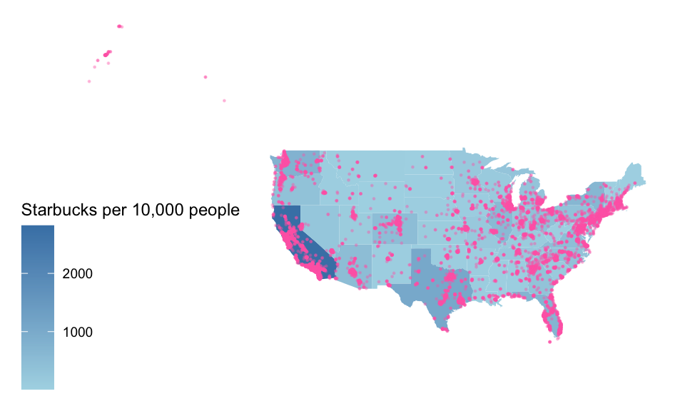
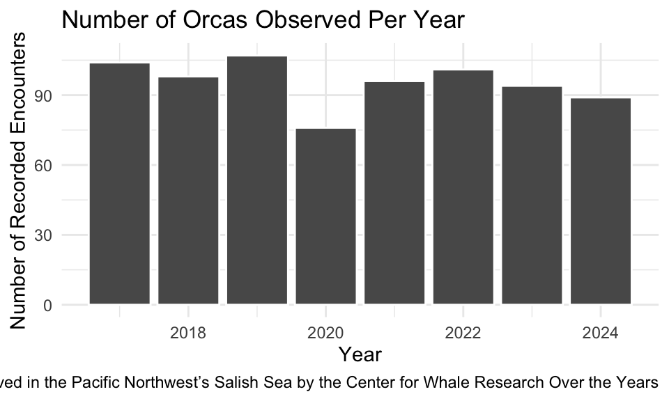
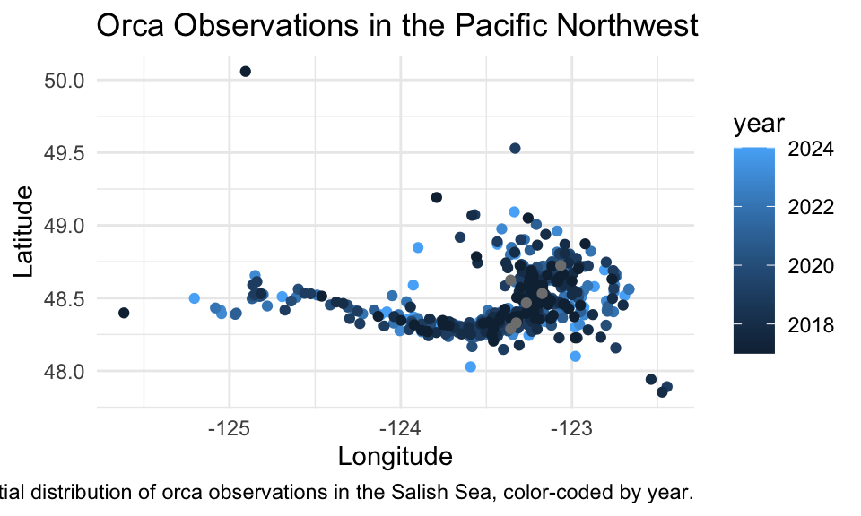

9 Homework 3: More Data Viz
We will be using the following packages. If any is not installed on your machine, install it by either
- running the command
install.packages(package name)in the Console or - via the Packages panel –> Install –> type
package name–> click Install.
9.1 Spatial Viz
9.1.1 Exercise 1
In this exercise, we will use the same Starbucks location data we worked with in class but on the US state-level only while taking into account the population of each state.
The code below creates the dataset starbucks_us_by_state that gives the number of Starbucks in each state.
The code below adds the variable starbucks_per_10000 that gives the number of Starbucks per 10,000 people to the dataest starbucks_with_2018_pop_est which will be used for the spatial visualization.
census_pop_est_2018 <- read_csv("https://mac-stat.github.io/data/us_census_2018_state_pop_est.csv") |>
separate(state, into = c("dot", "state"), extra = "merge") |>
select(-dot) |>
mutate(state = str_to_lower(state))Rows: 51 Columns: 2
── Column specification ────────────────────────────────────────────────────────
Delimiter: ","
chr (1): state
dbl (1): est_pop_2018
ℹ Use `spec()` to retrieve the full column specification for this data.
ℹ Specify the column types or set `show_col_types = FALSE` to quiet this message.9.1.1.1 Part a
Create a choropleth state map that shows the number of Starbucks per 10,000 people on a map of the US while taking into consideration the following instructions:
- Use a new fill color palette for the states,
- Add points for all Starbucks in the contiguous US,
- Add an informative title for the plot, and
- Include a caption that says who created the plot (you!).
Linking to GEOS 3.11.0, GDAL 3.5.3, PROJ 9.1.0; sf_use_s2() is TRUEstarbucks_data <- starbucks_with_2018_pop_est
us_states <- st_as_sf(
maps::map("state", fill = TRUE, plot = FALSE))
head(starbucks_data) State.Province n state_name est_pop_2018 starbucks_per_10000
1 AK 49 alaska 737438 0.6644626
2 AL 85 alabama 4887871 0.1738998
3 AR 55 arkansas 3013825 0.1824923
4 AZ 488 arizona 7171646 0.6804575
5 CA 2821 california 39557045 0.7131473
6 CO 481 colorado 5695564 0.8445169states_map <- map_data("state")
ourmap <- ggplot(data = starbucks_data) +
geom_map(
map = states_map,
aes(map_id = state_name, fill = n)) +
scale_fill_gradient(low = "lightblue", high = "steelblue", name = "Starbucks per 10,000 people")+
expand_limits(x = states_map$long, y = states_map$lat) +
theme_map() +
geom_point(data= starbucks %>% filter(Country=="US"), aes(x=Longitude, y=Latitude),
alpha = 0.3, size = 0.2, color = "hotpink"
) +
theme_map()
ourmap
9.1.1.2 Part b
Make a conclusion about what you observe from that spatial visual.
Based on the above spatial visual, we know that the greatest concentrations of Starbucks are located on the East and West Coasts. This is likely because some of the major cities in the US are located on the coasts, and it makes sense for bigger cities to have more franchise locations. One thing that surprises me about our map is that, though California has the largest population density and some of the greatest concentrations of starbucks locations in the country, we do not see the same for Texas – despite the fact that Texas has the second largest population density, it does not seem to have quite as many starbucks locations relative to its population. However, though the East Coast states have a lower population density, they have a lot more starbucks locations.
9.1.2 Exercise 2
In this exercise, you are going to create a single Leaflet map of some of your favorite places! The end result will be one map.
9.1.2.1 Part a
Create a data set using the tribble() function that has 10-15 rows of your favorite places. The columns will be the name of the location, the latitude, the longitude, and a column that indicates if it is in your top 3 favorite locations or not. For an example of how to use tribble(), look at the favorite_stp that is created manually below.
# Brianna's favorite St. Paul places - Used Google Maps to get coordinates
# https://support.google.com/maps/answer/18539?hl=en&co=GENIE.Platform%3DDesktop
favorite_stp <- tribble(
~place, ~long, ~lat, ~favorite,
"Macalester College", -93.1712321, 44.9378965, "yes",
"Groveland Recreation Center", -93.1851310, 44.9351034, "yes",
"Due Focacceria", -93.1775469, 44.9274973, "yes",
"Shadow Falls Park", -93.1944518, 44.9433359, "no",
"Mattocks Park", -93.171057, 44.9284142, "no",
"Carondelet Fields", -93.1582673, 44.9251236, "no",
"Pizza Luce", -93.1524256, 44.9468848, "no",
"Cold Front Ice Cream", -93.156652, 44.9266768, "no"
)my_favorites <- tribble(
~place, ~long, ~lat, ~favorite,
"Cold Front Ice Cream", -93.156652, 44.9266768, "no",
"Macalester College", -93.1712321, 44.9378965,"no",
"Grand County Colorado", -106, 40, "no",
"Deering Innovation Park", -81, 21, "no",
"Mason's Bend Trail, NY County", -81, 35, "no",
"Ocean County, NJ", -74, 40, "no",
"Ireland", -6, 53, "no",
"Musée d'Orsay", 2.3265849, 48.8599179, "yes",
"My Best Friend's House", -75.55272674560547, 40.13837432861328, "yes",
"Rodeo Beach, CA", -122.5364644, 37.8305479, "yes",
"Berkeley High School", -122.271379, 37.8670513, "no",
"Eastern State Penitentiary", -75.1726538, 39.9683436, "no"
)9.1.2.2 Part b
Create a map that uses circles to indicate your favorite places while taking into consideration the following instructions:
- Label the circles with the name of the place.
- Choose the base map you like best.
- Color your 3 favorite places differently than the ones that are not in your top 3.
- Add a legend that explains what the colors mean
library(leaflet)
leaflet(data = my_favorites) %>%
addProviderTiles("USGS.USImageryTopo")%>%
addCircles(
lng = ~long,
lat = ~lat,
weight = 7,
opacity = 1, # Added comma here
color = ifelse(my_favorites$favorite == "yes", "blue", "pink")
) %>%
addLegend(
position = "bottomright",
colors = c("pink", "blue"),
labels = c("Not a Top 3 Favorite", "Top 3 Favorite")
)9.2 TidyTuesday
Tidy Tuesday is a weekly data project put on by some folks from the R Data Science community. Each week, a different data set is posted and people around the world wrangle and visualize that data. According to the organizers, “The intent of Tidy Tuesday is to provide a safe and supportive forum for individuals to practice their wrangling and data visualization skills independent of drawing conclusions.”
The goals of this TidyTuesday are:
- Practice generating questions. You have to decide what to ask and how to answer it with a graphic.
- Practice identifying what viz and (eventually) wrangling tools are useful for addressing your questions.
- Get a sense of the broader data science community. Check out what people share out on X/Twitter #TidyTuesday. Maybe even share your own #TidyTuesday work on social media. Recent Mac alum Erin Franke (X/Twitter) has an inspiring account! Scrolling through, you’ll notice the trajectory of her work, starting from COMP/STAT 112 to today. Very cool.
9.2.1 Exercise 3
Go to TidyTuesday. Pick a dataset that was posted in July, August, or September 2024. Here, include:
- A short (~2 sentence) written description of your data. This should include:
- the original data source, ie, where did TidyTuesday get the data from?
- units of observation, ie, what are you analyzing?, and
- the data size, ie, how many data points do you have? how many variables are measured on each data point?.
- Code to import and examine the basic properties of your chosen dataset. This code must support the facts you cited in your short written description.
The data set I chose is about encounters with southern resident orcas in the Pacific Northwest’s Salish Sea. The data comes from the Center for Whale Research (CWR) and the units of observation are recorded encounters with orcas by CWR researchers. The data set contains 775 observations, with 19 variables being measured on each data point.
orcas <- readr::read_csv('https://raw.githubusercontent.com/rfordatascience/tidytuesday/master/data/2024/2024-10-15/orcas.csv')Rows: 775 Columns: 19
── Column specification ────────────────────────────────────────────────────────
Delimiter: ","
chr (10): encounter_sequence, duration, vessel, observers, pods_or_ecotype,...
dbl (6): year, encounter_number, begin_latitude, begin_longitude, end_lati...
date (1): date
time (2): begin_time, end_time
ℹ Use `spec()` to retrieve the full column specification for this data.
ℹ Specify the column types or set `show_col_types = FALSE` to quiet this message.9.2.2 Exercise 4
In the 3 sections below (Viz 1, 2, 3), construct 3 separate graphs that tell a connected story about the data you chose.
Before each viz:
- write a simple but specific research question you’re trying to address with the viz.
- write a 2-4 sentence summary of what you learn from the viz. This should connect back to your research question!
After each viz:
- Comment on at least 2 effective aspects of the viz (consider the effective visualization principles).
- Comment on at least 2 aspects of the visualization that could be improved. Perhaps these are aspects that you don’t know how to implement yet but wish you could update it.
Make sure each viz:
- has meaningful axis labels and legend titles
- has a figure caption (fig.cap)
- uses alt text (fig.alt)
- uses a more color-blind friendly color palette
Tips:
- Start with some questions in mind of what you want to learn.
- Start with a simple viz (viz 1), and build this up into something multivariate (viz 3).
- Reflect on each viz – what new questions do you have after checking out the viz? Let these questions guide your next viz. (eg: recall how we worked through the
MacNaturalGasdata at the start of the Spatial Viz activity).
9.2.2.1 Viz 1
Investigative Question: How long did most of these encoutners last?
library(ggplot2)
ggplot(data = orcas, aes(x = year)) +
geom_bar(color = "white") + # default ggplot2 colors are considered color-blind friendly
labs(
title = "Number of Orcas Observed Per Year",
x = "Year",
y = "Number of Recorded Encounters",
caption = "Figure 1: Orcas Observed in the Pacific Northwest’s Salish Sea by the Center for Whale Research Over the Years"
) +
theme_minimal()Warning: Removed 10 rows containing non-finite outside the scale range
(`stat_count()`).
9.2.2.2 Viz 2
library(ggplot2)
ggplot(data = orcas, aes(x = begin_longitude, y = begin_latitude, color = year)) +
geom_point() + # Default colors are color-blind friendly
labs(
title = "Orca Observations in the Pacific Northwest",
x = "Longitude",
y = "Latitude",
caption = "Figure 2: Spatial distribution of orca observations in the Salish Sea, color-coded by year."
) +
theme_minimal()Warning: Removed 53 rows containing missing values or values outside the scale range
(`geom_point()`).
9.2.2.3 Viz 3
10 Finalize Work
Congratulation 🎉. You’re done with the homework. See the instruction at top of the Homework Assignments page for how to submit.